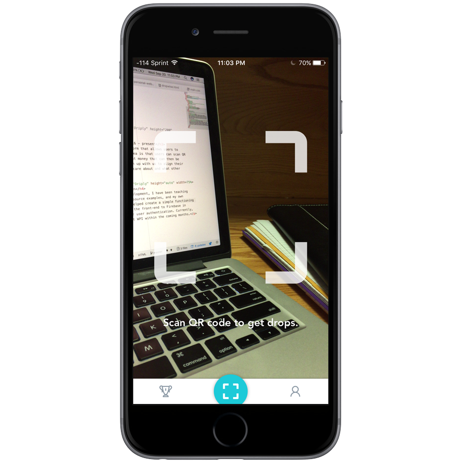

Driply
Dropwise Inc, Worcester MA, Nov 2016 - present
Driply is a social mobile platform that allows users to contribute to charitable causes and champion change. The general idea is that users can scan QR codes at certain businesses with us to earn "drops," which represent money that can then be donated to causes of their choice. Buisinesses will be able to sign up with us to align their brand with charity and obtain data regarding what their customers care about and what other businesses they go to.
Users can scan QR codes to earn points.
In order to contribute to development, I have been teaching myself React Native, through online tutorials and classes, open source examples, and my own experimentation. Over the summer I helped build a prototype. I helped create a simple functioning front-end, using Redux to manage application state. I connected the front-end to Firebase in order to store data, and I learned how to use Facebook's API for user authentication. Currently, we are developing a beta version, and expect to start testing at WPI within the coming months.